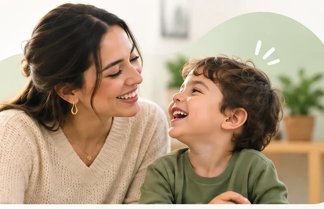
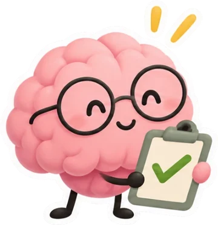
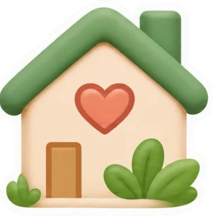
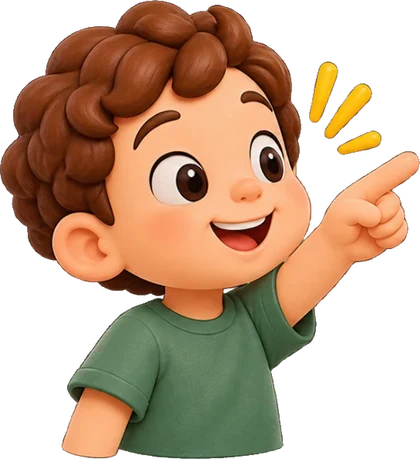
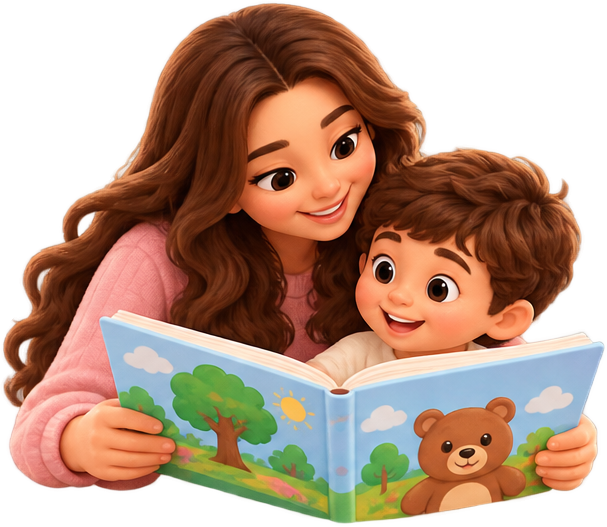

Crece en Casa · Acompañamiento familiar
Orientación Fonoaudiológica
01 · Conocer
Biblioteca de Momentos Comunicativos
Un espacio para comprender y acompañar. Hay algo que tu hijo quiere comunicar. Descubramos cómo acompañarlo.

La comunicación sucede mucho antes y mucho más allá de las palabras.
En esta biblioteca encontrarás contenidos visuales y breves sobre cómo se desarrolla la comunicación infantil, qué significan algunos gestos y comportamientos, y qué procesos acompaña la Fonoaudiología. Puedes explorar a tu ritmo: aquí no tienes que responder ni completar actividades.
Conoce lo que acompaña la Fonoaudiología
Explora estos contenidos para reconocer los diferentes componentes de la comunicación infantil. Cada tema presenta una explicación sencilla y un ejemplo visual.
02 · Comprender
Una mirada fonoaudiológica
La orientación profesional y las oportunidades de comunicación en casa se complementan. Cada una aporta algo distinto.
Fonoaudiología + vida cotidiana
Lo que se comprende desde la Fonoaudiología puede acompañarse en los momentos de cada día.
La Fonoaudiología aporta conocimiento sobre comunicación, lenguaje, habla, audición e interacción. La familia ofrece algo que ninguna sesión puede reemplazar: oportunidades reales de compartir, conversar y participar en sus rutinas.
-

Mirada profesional Comprender procesos y orientar estrategias. -

Vida en casa Incorporar intercambios en lo cotidiano.
Primero, observar al niño en contexto.
La comunicación no se reduce a contar palabras. También observamos miradas, gestos, sonidos, comprensión, juego e interacción.
Selecciona cada momento para descubrir cómo se complementan la mirada profesional y la participación familiar.
03 · Llevar a lo cotidiano
De comprender a acompañar
Así puede cambiar un momento cotidiano
No es una prueba ni una tarea. Explora una situación y observa una posible forma de acompañarla.

- 1Reconoce lo que sucede
- 2Comprende qué puede comunicar
- 3Descubre cómo responder
Elige una situación para explorar

Una forma de acompañar
Reconoce su gesto y dale significado.
Si señala un objeto, acércate a su interés y nombra lo que podría estar comunicando.
Puedes decir: «Quieres la pelota. Aquí está». No es necesario pedirle que repita la palabra.
La respuesta es una sugerencia general. Cada niño y cada situación son diferentes; adapta el acompañamiento sin forzar la interacción.

Microhistoria audiovisual
La comunicación está en lo que vivimos cada día.
Un video breve puede mostrar una situación familiar, hacer visible la señal comunicativa del niño y presentar una respuesta sencilla del adulto. Este espacio queda preparado para integrar el microvideo final de Crece en Casa.
Espacio reservado para video institucional · duración sugerida: 30–40 segundos
Alcance de esta sección: contenido educativo general con perspectiva fonoaudiológica. No realiza tamizaje, evaluación, diagnóstico ni intervención individual. La orientación digital complementa, pero no sustituye, la atención de un profesional cuando existen preocupaciones sobre el desarrollo comunicativo.